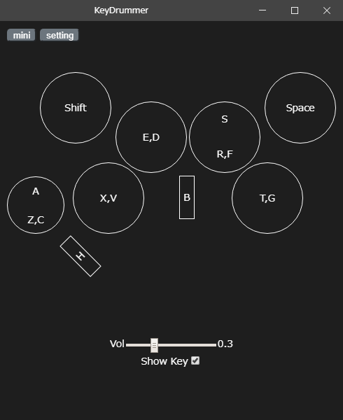

About Key Drummer
Key Drummer is a simple sound player built using Electron, TypeScript, and jQuery. It allows users to play sounds by pressing keys on their keyboard.


Key Drummer is a simple sound player built using Electron, TypeScript, and jQuery. It allows users to play sounds by pressing keys on their keyboard.
